User Manual
How to sign in, apply for benefits, apply for an NIB card, and manage your account on the NIB Online Portal.
About this manual
This manual walks you through every screen and action in the NIB Online Portal, the website Bahamian citizens use to apply for benefits and NIB cards online.
Who should read this: Any Bahamian citizen who wants to use the online portal instead of visiting an NIB office in person.
What you'll learn:
- How to create an account and sign in
- How to apply for each of the six benefit types (claims)
- How to apply for a new, renewed, or replacement NIB card
- How to upload supporting documents
- How to respond when NIB asks you to re-upload a document
- How to update your personal information and banking details
- How to check the status of every application you've submitted
Quick map, what you can do here
| Goal | Where to go |
|---|---|
| Sign in | Login page |
| Create a new NIB Online account | Register page |
| Forgot your password? | Reset password |
| Activate your account from an email link | Account activation |
| Apply for a benefit (claims) | Submit a claim |
| Apply for / renew a NIB card | Card application |
| Update your personal information | Account Information |
| Add or update banking details | Banking Details |
| Check the status of your applications | My Claims / Card Applications |
| Respond to a request to re-upload a document | Document reupload |
| Change your password or notification preferences | General Settings |
1.Signing in
When you visit nibonline.nib-bahamas.com, you land on the sign-in page if you're not already logged in.

What you need:
- Your NIB Number (this is your unique citizen identifier)
- Your password
If you don't yet have an online account, click Register here at the bottom of the sign-in card. If you've forgotten your password, click Forgot your password? above the sign-in button. If you registered but never received an activation email (or the link expired), click Resend activation email beside the forgot-password link.
After signing in successfully, you land on your portal home.
1.1 Creating a new account
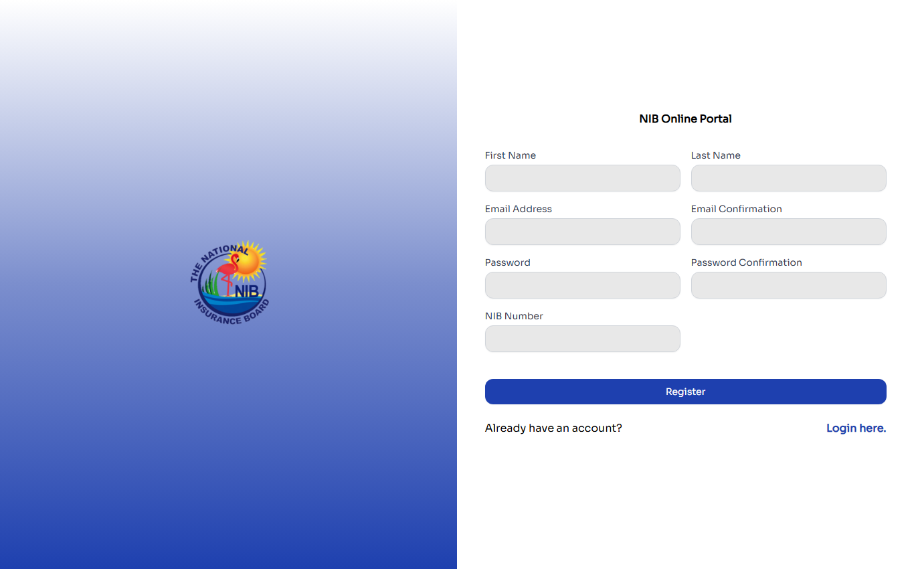
Registration captures just your identity and credentials:
- First Name and Last Name
- Email Address (with confirmation)
- Password (with confirmation)
- NIB Number
That's it for registration, you'll add contact info, addresses, and banking details later from your account section. After submitting, NIB sends you an activation email. Click the link to confirm your account before you can sign in.
1.2 Forgot password
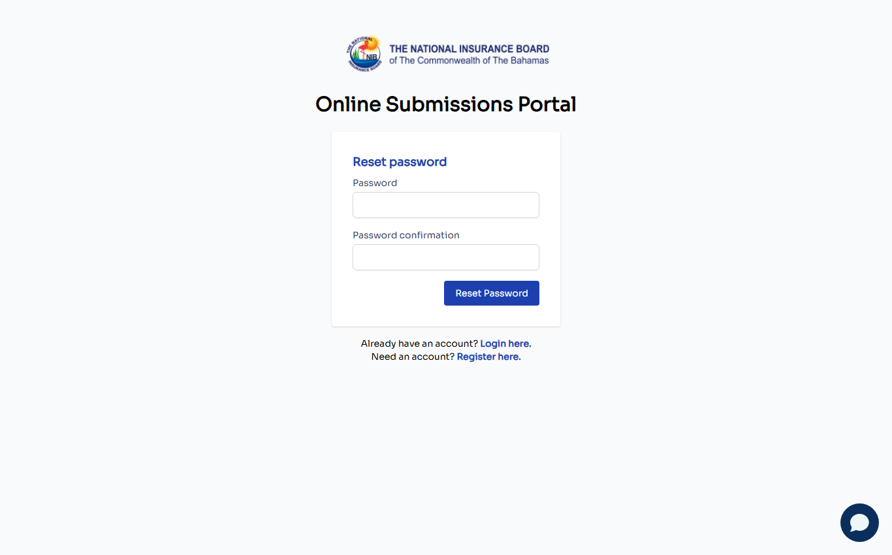
Enter your NIB number and the email associated with your account. You'll receive a password-reset email with a one-time link.
1.3 Account activation
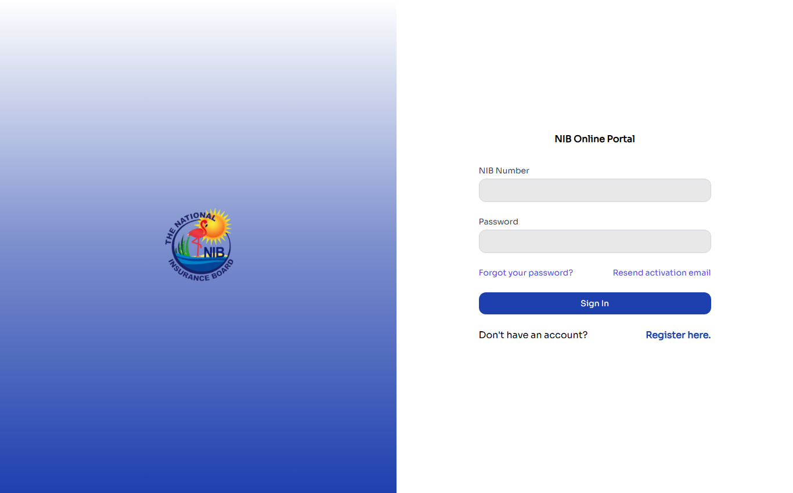
The account activation page is what you reach after clicking the link in the activation email NIB sent you when you registered. Without a valid activation token in the URL, this page will show an error, it's not meant to be visited directly.
2.Your portal home
After signing in, you land here. This is the center of everything, two large cards represent the two services you can use:
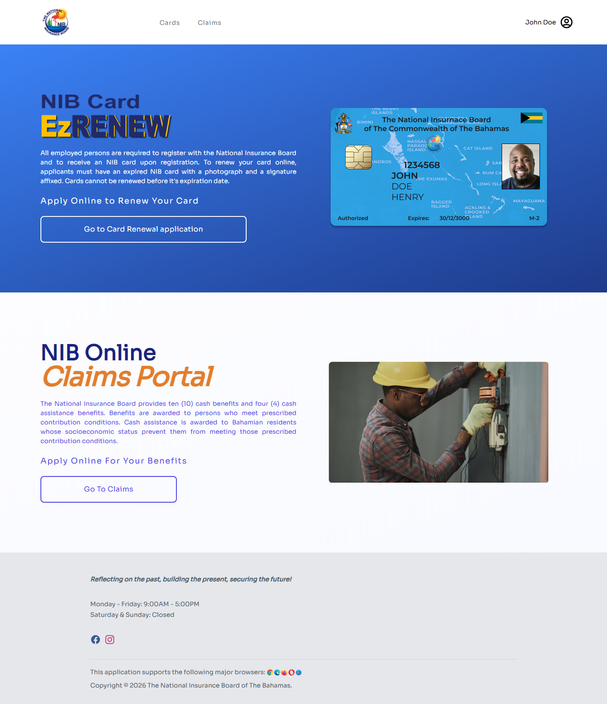
- Apply Online to Renew your Card: takes you to the NIB Card renewal flow
- Apply Online for Your Benefits: takes you to EzCLAIMS, the benefit-claims service
In the top-right, your name is displayed (for example: "John Doe"). Clicking it opens a menu with your account options and a sign-out link. The top nav has a Cards tab and a Claims tab, these jump directly to those sections.
3.Applying for a benefit (claims)
Click Go To Claims from the portal home (or Claims in the top nav) to reach the benefits picker. You'll see six benefit cards. Click Apply on the one you need:
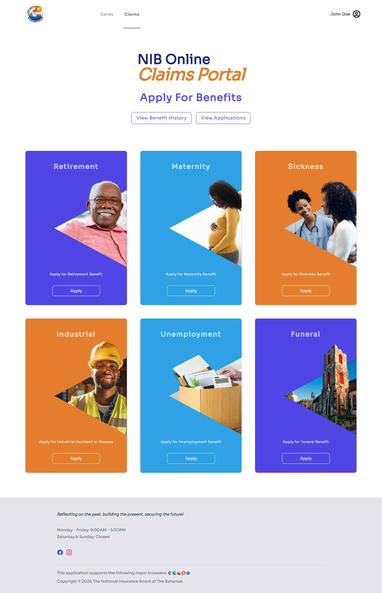
| Benefit | When to apply |
|---|---|
| Retirement | You've reached retirement age and need to claim your pension |
| Maternity | You're a working mother and entitled to paid maternity leave |
| Sickness | You're temporarily unable to work due to illness |
| Industrial (Injury Benefit) | You suffered a workplace injury and need OHSU-related benefits |
| Unemployment | You lost your job and need temporary income support |
| Funeral | A family member has passed and you're claiming the funeral benefit |
Each claim flow walks you through several steps:
- Your information: confirms your demographics on file (name, date of birth, address). Update if anything is out of date.
- Banking details: choose the bank account you want the benefit paid into. If you haven't added one yet, you'll be prompted to add one here.
- Claim-specific questions: details about the claim (last day of work, employer NIB number, dates of incapacity, etc., varies by benefit type).
- Document upload: upload supporting documents (medical certificate B81, employer's certificate B80, passport, etc., varies by benefit type).
- Review and submit: final summary; click Submit to send your claim to NIB.
After submission, you'll receive a confirmation email. Your claim moves into the Submitted state, where an NIB Claims Officer can review it.
View your submitted claims
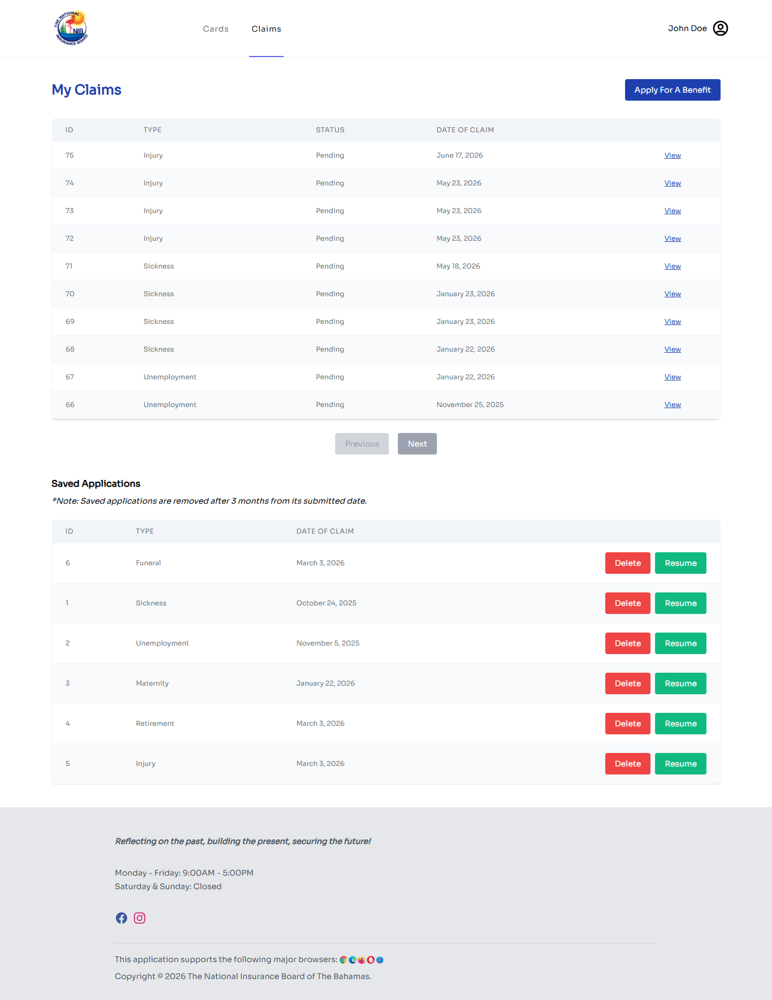
Click View Benefit History or View Applications from the Claims home to see every claim you've submitted, its current status, and any actions required.
4.Applying for an NIB card
Click Apply Now under NIB Card EzRENEW from the portal home, or click Cards in the top nav. Card applications come in three flavors:
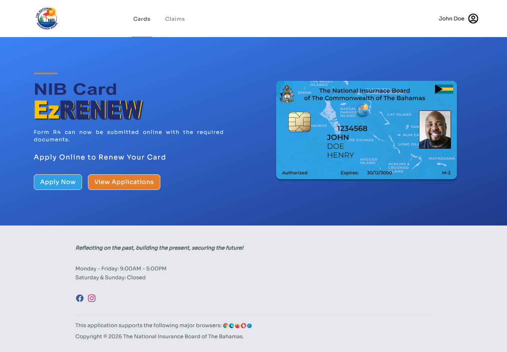
- New Card: you've never held an NIB card and need your first one
- Renewal: your existing card is at or near expiration
- Replacement: your card was lost, damaged, or stolen
Each flow follows a similar pattern:
- Your information: same demographics confirmation as the claims flow
- Photo upload: a recent passport-style photo (required)
- Supporting documents: varies by application type (passport bio page, marriage certificate for name changes, police report for lost cards, etc.)
- Review and submit
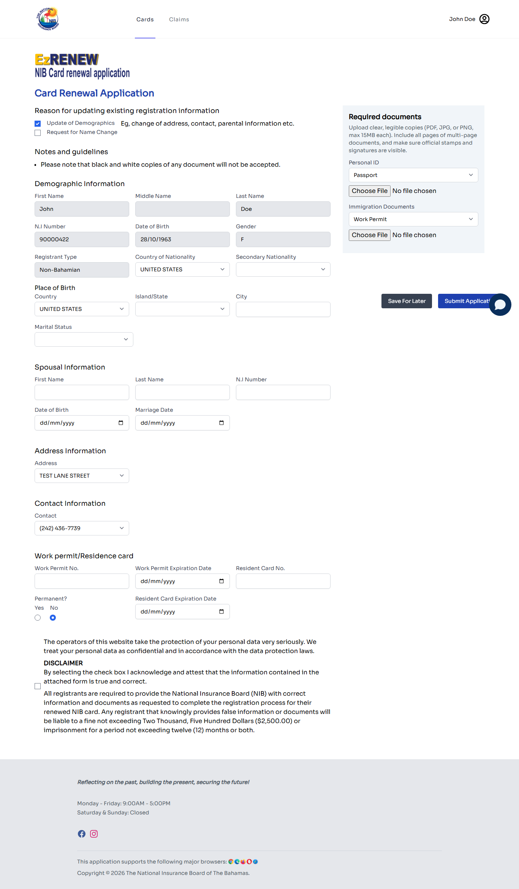
View your submitted card applications
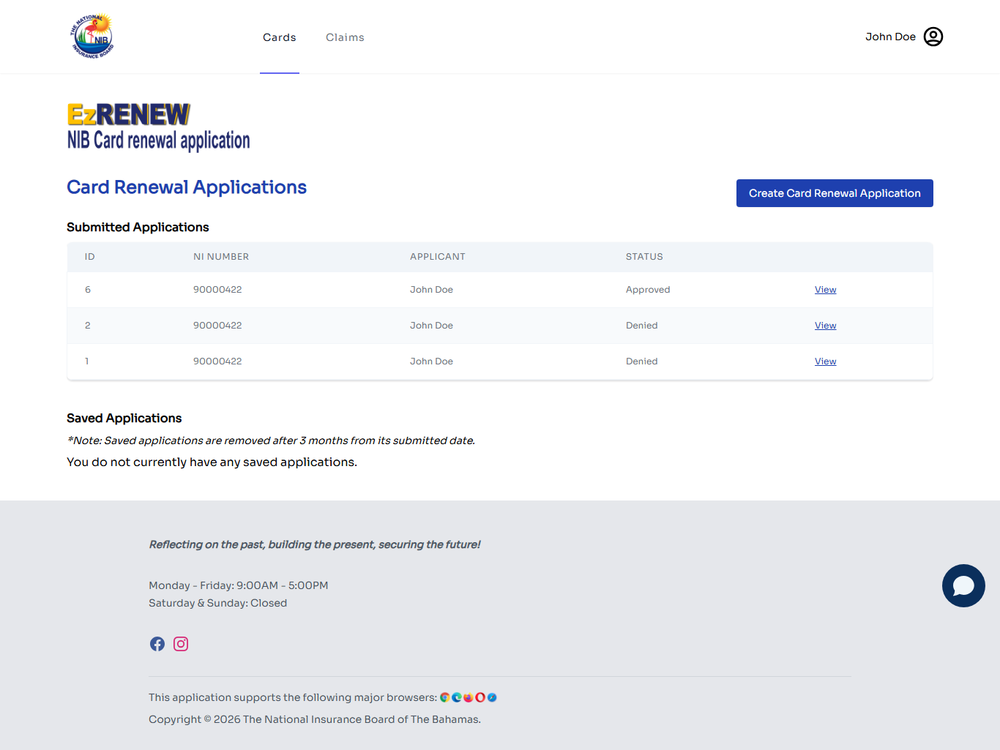
Same idea as the claims list, every card application you've submitted, with status.
5.Managing your account
Click your name in the top-right and choose My Account, or visit /my-account directly. The My Account section has three sub-pages, shown as a sidebar on the left:
- General Settings: password and email
- Account Information: your personal details (addresses, contacts)
- Banking Details: bank accounts for receiving benefit payments
When you first click My Account, you land on General Settings.
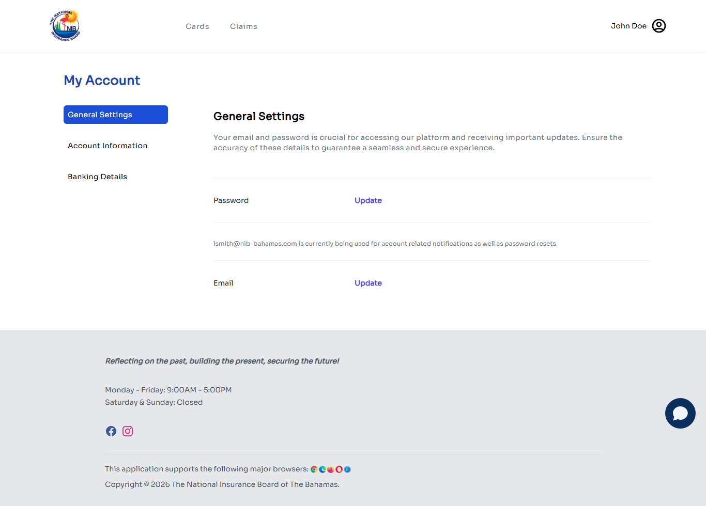
5.1 General Settings
The default page. From here you can:
- Update Password: click the Update link beside Password. You'll be prompted for your current password and a new one.
- Update Email: click Update beside Email. The page also shows which email address is currently being used for account notifications and password resets.
5.2 Account Information
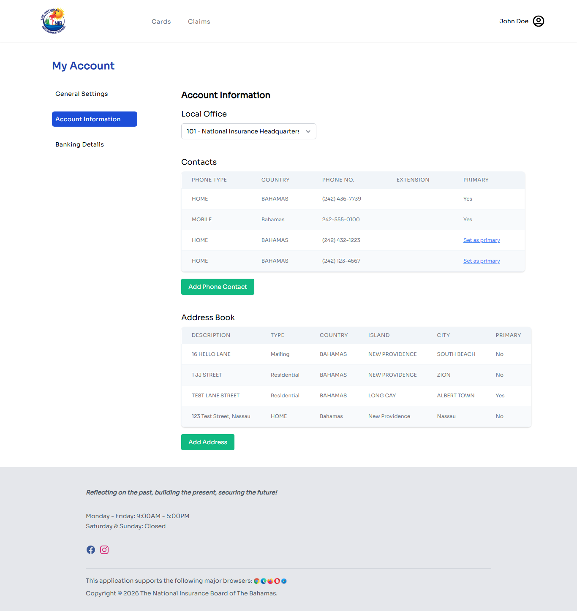
Your personal information: addresses, phone numbers, contact details. Update this section if you move, change phone numbers, or update contact information. Changes are saved immediately and you'll receive an email confirmation.
(Internally this section is also referred to as "Claimant Information", same page.)
5.3 Banking Details
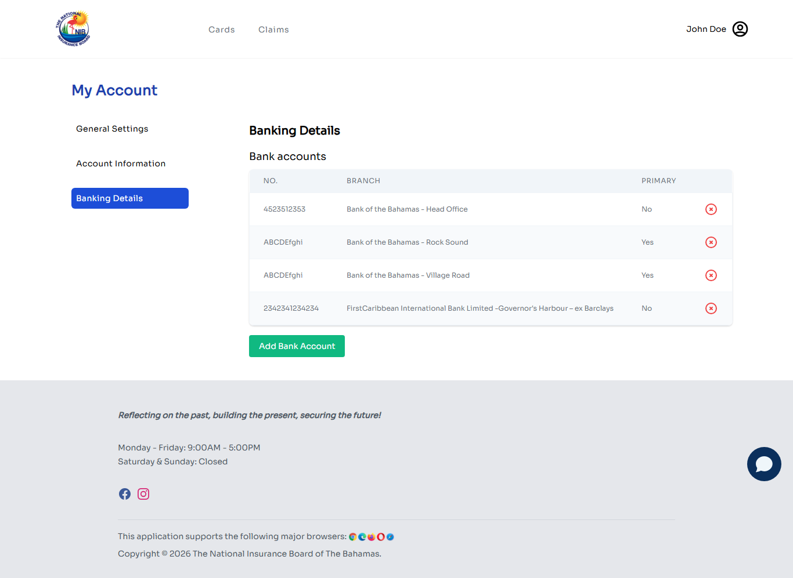
Your bank accounts on file for receiving benefit payments. The page shows a table with Account No., Branch, and Primary columns plus a delete (×) action per row, and an Add Bank Account button below.
- Add Bank Account: opens a form for name of bank, branch, account type, account number. You'll be asked to upload a supporting document (void cheque, bank statement, or bank confirmation letter).
- Delete (×): removes a bank account you no longer want on file.
- Primary column shows which account receives benefit payments by default; the primary flag is set during the add flow or by editing a specific row.
The supporting document is verified by NIB during application review. You may be asked to re-upload if the document is unreadable or doesn't match the account details.
6.Checking application status
You have two places to check application status:
- For benefit claims: Click Claims in the top nav → View Benefit History
- For card applications: Click Cards in the top nav → View Applications
Status values you may see (status names can vary slightly depending on application type):
| Status | What it means |
|---|---|
| Pending | Application has been submitted and is awaiting NIB review (or, for saved applications shown in the Saved Applications section, still a draft you haven't submitted yet). |
| Submitted | NIB has received your application. An officer will review it. |
| In Review | An NIB officer is currently working on your application. |
| Reupload Requested | NIB needs you to upload a clearer or different version of one of your documents. Action required from you: see section 7. |
| Approved | Your application has been approved. For benefits, payment will follow per the benefit's pay schedule. |
| Denied | Your application has been denied. The denial reason will be shown; you can contact NIB if you have questions. |
| Ready for Pickup (cards only) | Your new/renewed NIB card has been printed and is ready for collection at your local office. |
The My Claims screen also has a separate Saved Applications section at the bottom listing any in-progress drafts. Each saved application has Resume and Delete buttons.
7.Responding to a reupload request
If an NIB officer reviews your application and finds a document that's unreadable, incomplete, or missing, they'll request a reupload. You'll receive an email letting you know.
How to respond:
- Sign in to the portal.
- Go to My Claims (for benefits) or Card Applications (for cards).
- Find the application marked Reupload Requested.
- Click into it. You'll see which specific document(s) need a new upload, and the reason the officer gave.
- Click the Upload or Replace action next to that document.
- Choose a new file from your device.
- Confirm.
The officer is notified automatically. Your application returns to In Review. No further action is needed unless they request another reupload.
8.Common questions
My NIB number isn't being accepted at sign-in.
NIB numbers are typically 7–8 characters. Try entering yours in lowercase if upper case isn't working, the system normalizes case. If you still can't sign in, use Forgot your password? to verify the number-to-account mapping or call NIB Customer Service.
I registered but never got an activation email.
Check spam/junk first. Then go to the sign-in page and click Resend activation email. The portal will look up your NIB number and email you a fresh activation link.
I uploaded a document but it shows the wrong filename or isn't visible.
First refresh the page. If it's still missing, contact NIB Customer Service, there may be a banking-doc routing issue (a known historical bug; see internal incident notes if you're staff).
How do I know which documents are required for my claim?
Each claim type has a documents step that lists required documents before you can submit. If you're missing any, you can't proceed to submit. Save for later, gather your docs, then come back.
Can I edit a claim after submitting?
Once submitted, you can't edit. You can only respond to reupload requests from an officer. If you submitted incorrect information, contact NIB Customer Service.
My card application is taking a long time to approve. What's normal?
Card applications typically process within several business days. Status changes will trigger email notifications. If you've waited longer than two weeks without a status change, contact your local NIB office.
9.Need help?
Visit your nearest NIB Local Office for in-person help. Use the locations page on the public NIB website (nib-bahamas.com) for hours and addresses.
For password / sign-in issues that the self-service flows can't fix, NIB Customer Service can verify your identity and help recover access.
Document information
- Title
- NIB Online Portal, User Manual
- Audience
- Bahamian Citizens
- Version
- 1.1
- Issued
- 2026-08-19
- Published by
- National Insurance Board of The Bahamas
Screenshots reflect the portal as of the issue date. Future updates to the portal may change minor visual details but the workflow described in this manual will remain the same. If you notice a significant difference between this manual and what you see on screen, please notify NIB Customer Service.